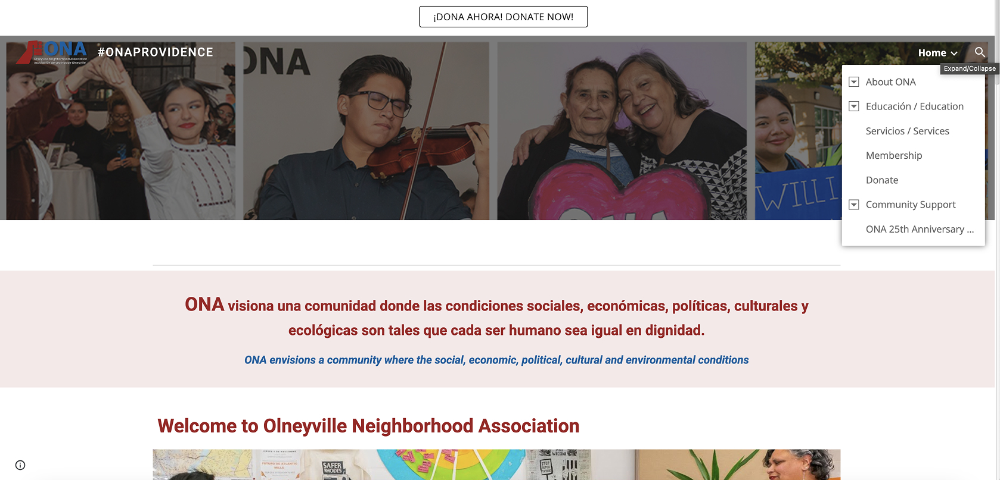

Community organizations do incredibly impactful work. They need their webpages to communicate that as well.
Olneyville Neighborhood Association (ONA)
ONA is a Rhode Island-based community organization that provides a variety of different services, educational programming, and leads grassroots campaigns to protect their community in the heart of Providence.
I decided to redesigned this website becuase I've heard about the organization on the local news and when I went to check out the website I noticed some design changes that could greatly improve the organization's image and branding.
Previous website (ona-providence.org)
 Since completing this case study, the ONA website has been redesigned from the version you see above. To view the older version of the site, go here↗Usability Analysis
▶ Learnability
- Site is hard for new users to navigate due to dual Spanish/English text.
- Little hierarchy means conceptual model is unclear until several clicks in.
▶ Efficiency
- Users must click through several tabs to find info or join.
- Site doesn't clearly show what actions users can take.
▶ Memorability
- Low memorability since users must explore deeply to locate features.
▶ Accessibility Assessment (WAVE)
- Missing or null alt text for images, harming screen reader experience.
- Contrast issues between red and white colors.
My findings showed that the webpage has poor learnability since there are so many mouse clicks a user has to make before arriving to the actual services the website provides.
I also found that the site that incorporate dual English/Spanish text can be confusing for users and does not display well across different screen sizes.
My Redesign
Visual Style Guide
Mockups
Laptop
Mobile
For mobile compatability, add a media tag to change the direction of the grid to column
Final Redesign
Link